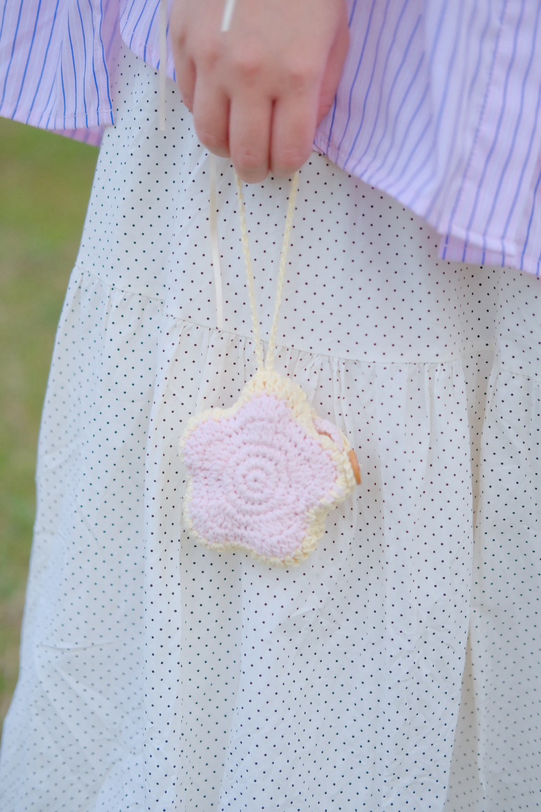
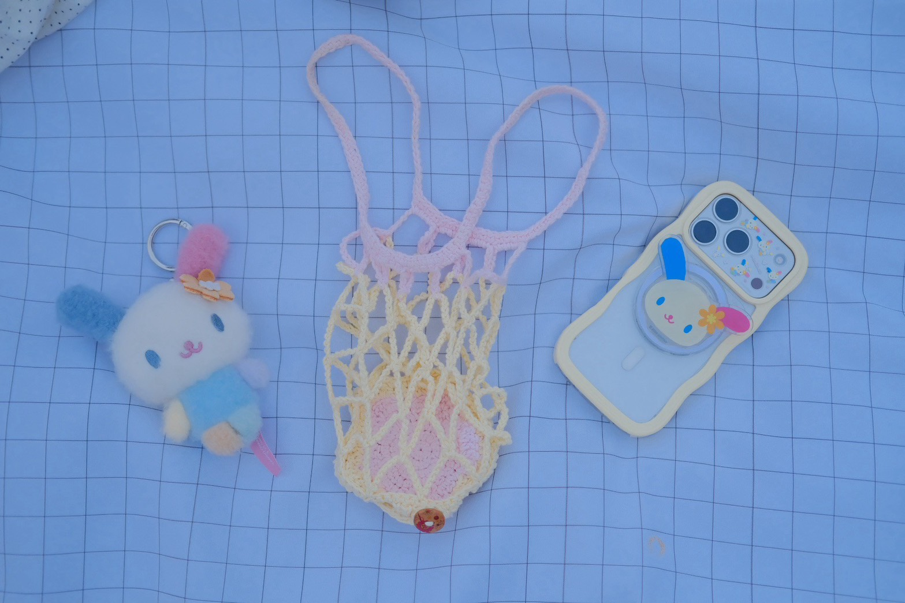
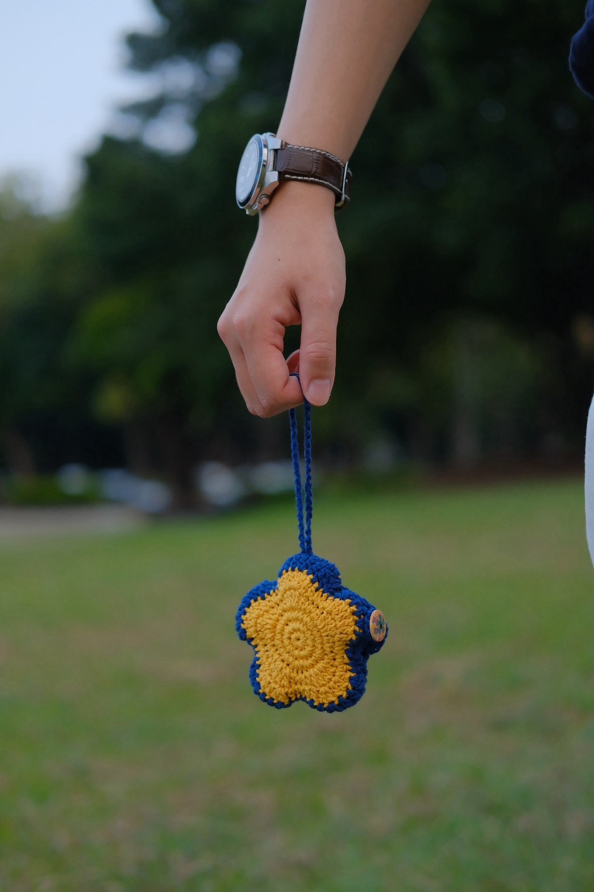
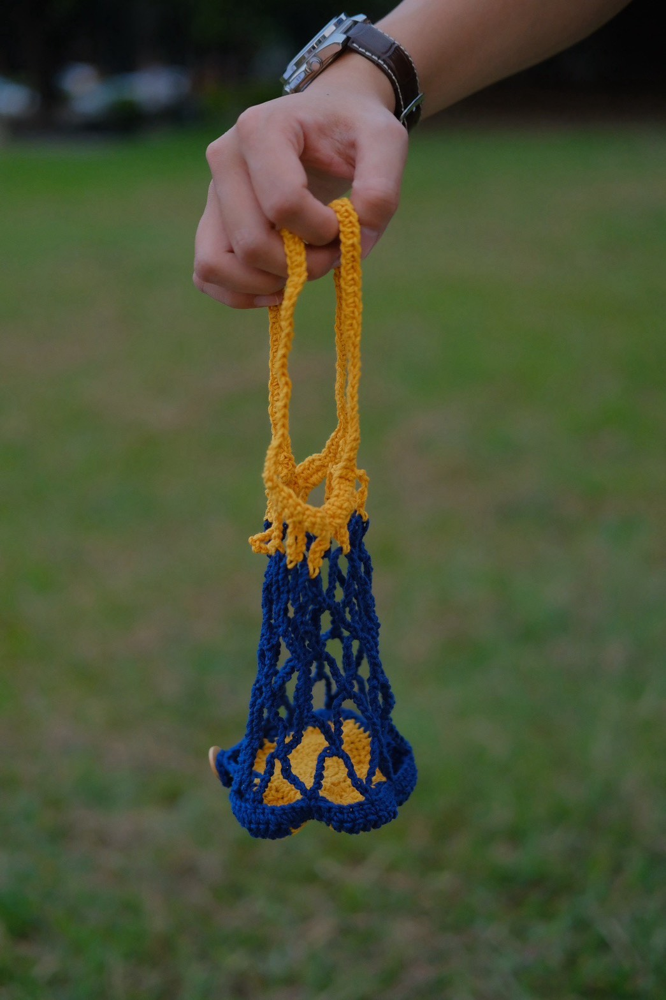
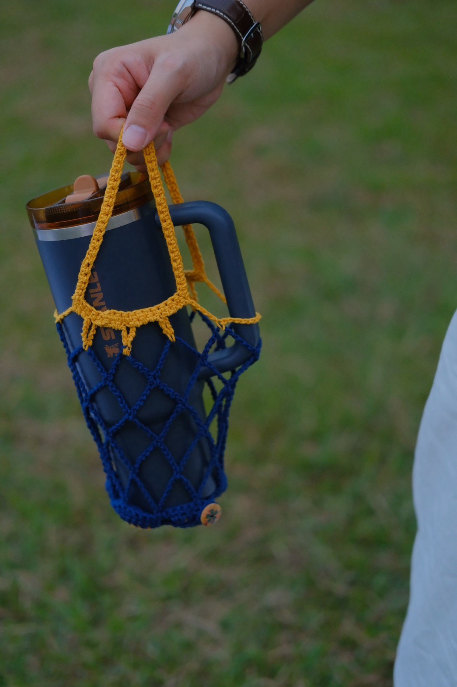
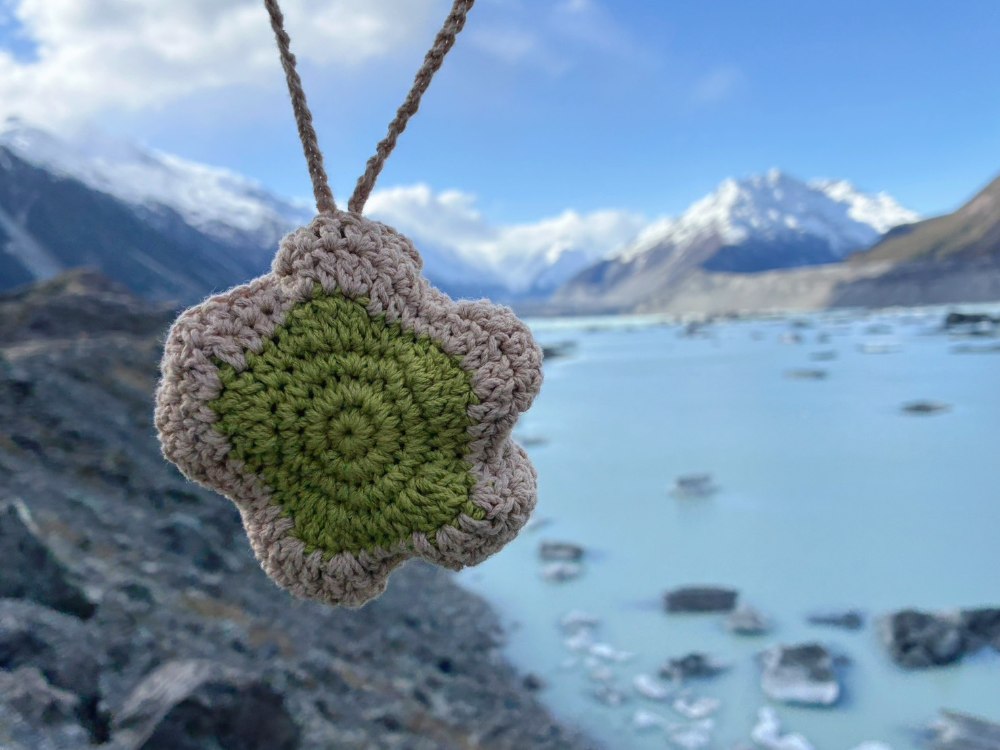
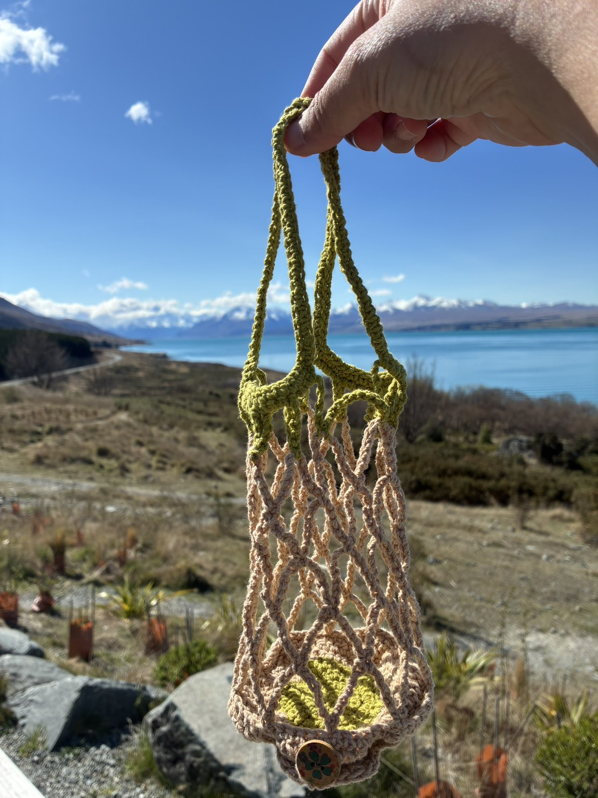
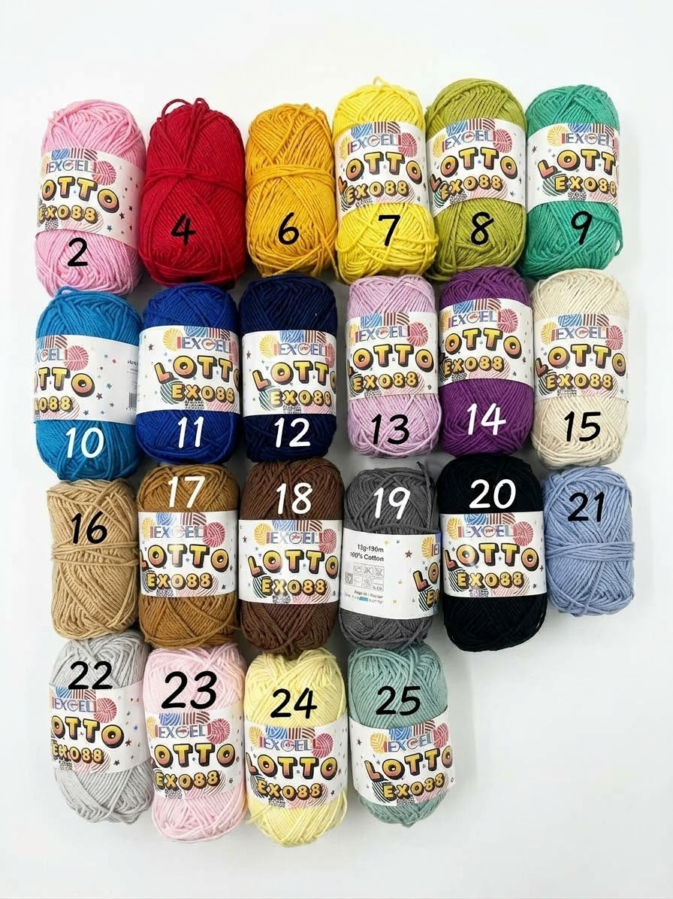

鉤織的網狀提網，裝得下水壺或飲料杯，提著就能出門。
不用的時候，把網子收進花朵形狀的底座，扣上木釦，就變成一朵圓鼓鼓的小花吊飾。
每個提網用兩個顏色：
兩個顏色都可以從下方色卡的 22 色中挑選。








照片放在 wwwroot/products/puff-flower-net/：cover.jpg 是封面，01.jpg、02.jpg… 依序排在後面，colors.jpg 是色卡。換照片後重新整理這頁。
wwwroot/products/puff-flower-net/